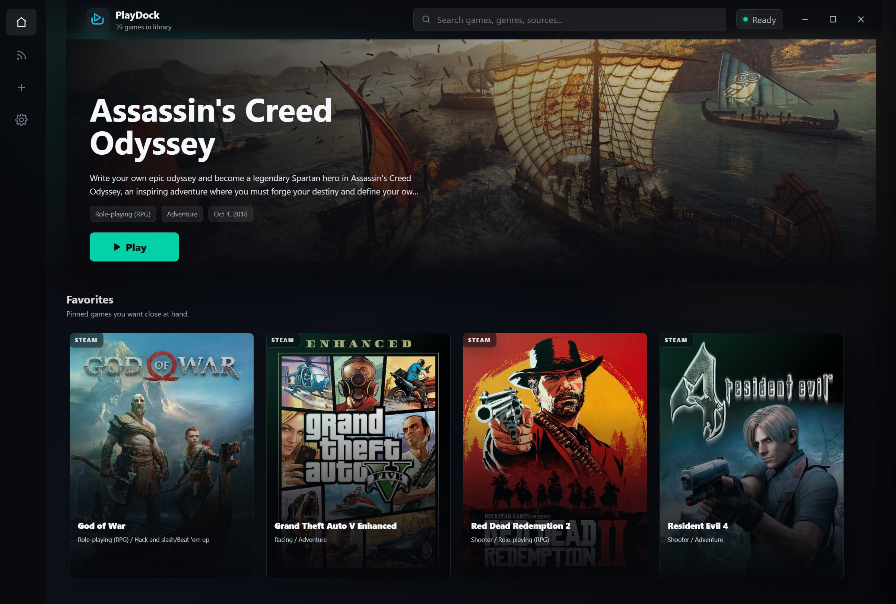

Launch directly
Start games from their cards, with launch paths, working directories, arguments, and process names kept editable.
Windows desktop gaming hub
PlayDock scans supported launchers, lets you add local games, enriches your library with IGDB metadata, and keeps gaming headlines nearby.

Browse, search, organize, and launch your PC games from a single desktop interface.
Start games from their cards, with launch paths, working directories, arguments, and process names kept editable.
Pull covers, screenshots, summaries, genres, developers, publishers, scores, videos, and links from IGDB.
Keep favorites, recent games, play count, playtime, hidden games, and local library details organized.
Read gaming news from configurable RSS feeds, grouped by date with thumbnails and external article links.
Add executables, shortcuts, URLs, batch files, command files, or scan whole folders for local games.
Your library, app settings, RSS configuration, hidden games, and IGDB credentials stay on your Windows device.
Switch between adding games, scanning folders, and checking RSS updates without leaving the desktop app.
PlayDock scans installed games from common PC sources and lets you fill the gaps manually.
PlayDock is open source, so you can inspect the code, build it locally, report issues, or contribute improvements.
The source repository includes the Electron app, launcher integrations, metadata tools, RSS support, and Windows build configuration.
Open GitHub repositoryPlayDock stores your library, settings, RSS configuration, hidden games, and IGDB credentials locally on your Windows device.
Network access is used for IGDB authentication, metadata lookup, image downloads, RSS feed loading, and links you choose to open.
Read privacy detailsIGDB metadata is optional. Add a Client ID and Client Secret in Settings to enable metadata search and automatic metadata loading.
Create IGDB credentials